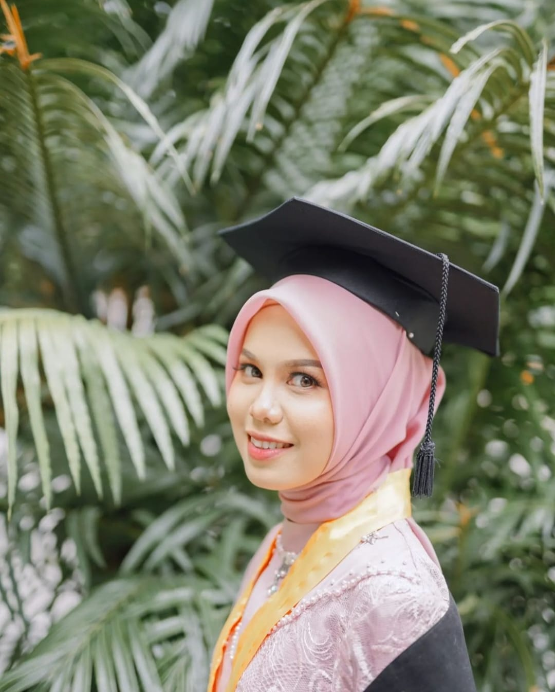

Minal Aidin Wal Faizin! Semoga kita semua senantiasa dalam keadaan baik dan diberkahi di setiap langkah yang kita ambil. Semoga kebahagiaan selalu menyertai kita, meskipun dalam keadaan yang sederhana. Semoga tahun depan kita bisa merayakan Lebaran dengan lebih bermakna, termasuk kesempatan untuk mudik dan berkumpul dengan keluarga. Aamiin Ya Rabbal Alamin. Selamat merayakan! 🕋🤲🤗 Dan semangat kerjanya setelah Lebaran! Semoga kita semua bisa kembali dengan energi baru dan motivasi yang tinggi untuk mencapai impian dan tujuan kita. Selamat beraktivitas! 💪✨
Semoga ramadhan tahun depan kita semua bisa meraih impian untuk berkunjung ke Mekkah. Semoga Allah memudahkan segala urusan dan memberikan kesempatan bagi kita untuk melaksanakan ibadah haji atau umrah. Mari kita persiapkan diri dengan baik, baik secara fisik maupun spiritual, agar perjalanan kita menjadi berkah dan penuh makna. Aamiin Ya Rabbal Alamin. Semoga impian ini segera terwujud jangan lupa berdoa yaa ! 🕋✨
Setiap langkah yang kita ambil menuju Mekkah adalah langkah menuju kedamaian dan keberkahan. Impian untuk menginjakkan kaki di tanah suci bukanlah sekadar keinginan, tetapi panggilan jiwa yang harus kita persiapkan dengan sepenuh hati. Dengan niat yang tulus, usaha yang konsisten, dan doa yang tak henti, Allah akan memudahkan jalan bagi kita. Mekkah bukan hanya tujuan fisik, tetapi juga perjalanan spiritual yang akan mengubah hidup kita selamanya. Mari kita jadikan impian ini sebagai motivasi untuk menjadi pribadi yang lebih baik, karena setiap amal baik yang kita lakukan adalah langkah lebih dekat menuju pengalaman yang tak ternilai ini. Yakinlah, dengan keyakinan dan usaha, impian kita untuk pergi ke Mekkah akan terwujud. Aamiin. 🕋✨
Amsterdam adalah kota yang menanti untuk dijelajahi, penuh dengan keindahan, sejarah, dan budaya yang kaya. Setiap langkah yang kita ambil menuju impian untuk mengunjungi kota ini adalah langkah menuju pengalaman baru yang tak terlupakan. Dengan niat yang kuat dan usaha yang konsisten, kita bisa mewujudkan impian ini. Bayangkan diri kita berjalan di sepanjang kanal yang indah, mengagumi seni di museum-museum terkenal, dan mencicipi kuliner lokal yang menggugah selera. Setiap rencana yang kita buat untuk pergi ke Amsterdam adalah investasi untuk petualangan yang akan memperkaya hidup kita. Jadi, siapkan diri dan buka hati untuk keajaiban yang ditawarkan kota ini, karena dengan semangat dan tekad, impian kita pasti akan terwujud. Ayo, wujudkan perjalanan ke Amsterdam dan buat kenangan yang akan bertahan seumur hidup! 🌍✈️✨
Tokyo adalah kota yang penuh dengan keajaiban dan inovasi, menanti untuk dijelajahi oleh setiap petualang. Setiap detik yang kita habiskan untuk merencanakan perjalanan ke Tokyo adalah langkah menuju pengalaman yang tak terlupakan. Bayangkan diri kita berjalan di antara gedung-gedung pencakar langit yang megah, menikmati keindahan taman tradisional, dan mencicipi kuliner lezat yang hanya bisa ditemukan di sana. Dengan niat yang kuat, usaha yang konsisten, dan doa yang tulus, kita bisa mewujudkan impian ini. Tokyo bukan hanya sekadar tujuan, tetapi juga tempat di mana kita bisa belajar tentang budaya yang kaya dan tradisi yang mendalam. Jadi, siapkan diri dan buka hati untuk segala keajaiban yang ditawarkan kota ini. Dengan semangat dan tekad, impian kita untuk mengunjungi Tokyo pasti akan terwujud. Ayo, wujudkan perjalanan ini dan buat kenangan yang akan menginspirasi kita selamanya! 🌸✈️✨
Seoul, kota yang memadukan tradisi dan modernitas, menanti untuk dijelajahi dan memberikan pengalaman yang tak terlupakan. Setiap langkah yang kita ambil menuju impian untuk mengunjungi Seoul adalah langkah menuju petualangan yang penuh warna, di mana kita bisa merasakan denyut kehidupan yang dinamis dan kehangatan budaya Korea. Bayangkan diri kita berjalan di sepanjang jalan-jalan bersejarah, mencicipi hidangan lezat seperti kimchi dan bulgogi, serta menikmati keindahan alam di taman-taman yang menawan. Dengan tekad yang kuat, usaha yang konsisten, dan keyakinan bahwa impian ini bisa terwujud, kita akan mampu mengatasi segala rintangan. Seoul bukan hanya sekadar tujuan, tetapi juga tempat di mana kita bisa menemukan inspirasi dan memperluas wawasan. Jadi, siapkan diri dan buka hati untuk segala keajaiban yang ditawarkan kota ini. Dengan semangat dan keberanian, impian kita untuk mengunjungi Seoul pasti akan menjadi kenyataan. Ayo, wujudkan perjalanan ini dan ciptakan kenangan yang akan mengubah hidup kita selamanya! 🇰🇷✈️✨
Melbourne, kota yang dikenal dengan seni, budaya, dan keindahan alamnya, menanti untuk dijelajahi dan memberikan pengalaman yang tak terlupakan. Setiap langkah yang kita ambil menuju impian untuk mengunjungi Melbourne adalah langkah menuju petualangan yang penuh inspirasi, di mana kita bisa menikmati suasana kafe yang unik, mengagumi karya seni di galeri-galeri, dan menjelajahi taman-taman yang menawan. Bayangkan diri kita berjalan di sepanjang jalan-jalan yang dipenuhi dengan mural warna-warni dan merasakan kehangatan masyarakat yang ramah. Dengan tekad yang kuat, usaha yang konsisten, dan keyakinan bahwa impian ini bisa terwujud, kita akan mampu mengatasi segala rintangan yang menghadang. Melbourne bukan hanya sekadar tujuan, tetapi juga tempat di mana kita bisa menemukan diri kita sendiri dan memperluas wawasan. Jadi, siapkan diri dan buka hati untuk segala keajaiban yang ditawarkan kota ini. Dengan semangat dan keberanian, impian kita untuk mengunjungi Melbourne pasti akan menjadi kenyataan. Ayo, wujudkan perjalanan ini dan ciptakan kenangan yang akan mengubah hidup kita selamanya! 🇦🇺✈️✨
Singapura, sebuah kota yang memadukan kemewahan dan keberagaman budaya, menanti untuk dijelajahi dan memberikan pengalaman yang tak terlupakan. Setiap langkah yang kita ambil menuju impian untuk mengunjungi Singapura adalah langkah menuju petualangan yang penuh inspirasi, di mana kita bisa menikmati keindahan arsitektur futuristik, mencicipi kuliner lezat dari berbagai belahan dunia, dan merasakan suasana yang dinamis di setiap sudutnya. Bayangkan diri kita berjalan di sepanjang Marina Bay, mengagumi keindahan Gardens by the Bay, dan merasakan kehangatan masyarakat yang ramah. Dengan tekad yang kuat, usaha yang konsisten, dan keyakinan bahwa impian ini bisa terwujud, kita akan mampu mengatasi segala rintangan yang menghadang. Singapura bukan hanya sekadar tujuan, tetapi juga tempat di mana kita bisa belajar tentang inovasi dan keberagaman. Jadi, siapkan diri dan buka hati untuk segala keajaiban yang ditawarkan kota ini. Dengan semangat dan keberanian, impian kita untuk mengunjungi Singapura pasti akan menjadi kenyataan. Ayo, wujudkan perjalanan ini dan ciptakan kenangan yang akan mengubah hidup kita selamanya! 🇸🇬✈️✨
Swiss, negeri yang dikenal dengan pemandangan alamnya yang menakjubkan dan budaya yang kaya, menanti untuk dijelajahi dan memberikan pengalaman yang tak terlupakan. Setiap langkah yang kita ambil menuju impian untuk mengunjungi Swiss adalah langkah menuju petualangan yang penuh keajaiban, di mana kita bisa menikmati keindahan pegunungan Alpen, menjelajahi desa-desa yang menawan, dan mencicipi cokelat serta keju yang terkenal di dunia. Bayangkan diri kita berdiri di tepi danau yang jernih, dikelilingi oleh pemandangan yang memukau, sambil merasakan ketenangan dan kedamaian yang hanya bisa ditemukan di sana. Dengan tekad yang kuat, usaha yang konsisten, dan keyakinan bahwa impian ini bisa terwujud, kita akan mampu mengatasi segala rintangan yang menghadang. Swiss bukan hanya sekadar tujuan, tetapi juga tempat di mana kita bisa menemukan keindahan alam dan kekayaan budaya yang menginspirasi. Jadi, siapkan diri dan buka hati untuk segala keajaiban yang ditawarkan negeri ini. Dengan semangat dan keberanian, impian kita untuk mengunjungi Swiss pasti akan menjadi kenyataan. Ayo, wujudkan perjalanan ini dan ciptakan kenangan yang akan mengubah hidup kita selamanya! 🇨🇭✈️✨
Old Trafford Stadium, rumah bagi klub sepak bola legendaris Manchester United, adalah tempat yang penuh dengan sejarah dan semangat yang menggetarkan. Setiap langkah yang kita ambil menuju impian untuk mengunjungi stadion ini adalah langkah menuju pengalaman yang tak terlupakan, di mana kita bisa merasakan atmosfer luar biasa dari ribuan penggemar yang bersorak untuk tim kesayangan mereka. Bayangkan diri kita berdiri di tengah lapangan yang megah, dikelilingi oleh kenangan-kenangan besar dan momen-momen bersejarah yang telah mengukir nama Manchester United di dunia sepak bola. Dengan tekad yang kuat, usaha yang konsisten, dan keyakinan bahwa impian ini bisa terwujud, kita akan mampu mengatasi segala rintangan yang menghadang. Old Trafford bukan hanya sekadar stadion, tetapi juga simbol dari dedikasi, kerja keras, dan cinta terhadap permainan. Jadi, siapkan diri dan buka hati untuk segala keajaiban yang ditawarkan tempat ini. Dengan semangat dan keberanian, impian kita untuk mengunjungi Old Trafford pasti akan menjadi kenyataan. Ayo, wujudkan perjalanan ini dan ciptakan kenangan yang akan menginspirasi kita selamanya! ⚽️🏟️✨
Sebelumnya aku mau ngucapin HAPPY GRADUATION ya maaf kalo ngucapinnya telat dan udah 2 tahun lalu wisudanya jadi baru sekarang sempet ngucapinnya hehe, jadi aku sangat bangga dengan pencapaianmu! Dua tahun yang lalu adalah momen yang sangat spesial, dan meskipun aku terlambat mengucapkannya, semangat dan kebahagiaanmu tetap terasa. Sekarang, aku ingin melanjutkan perayaan ini dengan cara yang lebih personal. Jika kamu sudah siap untuk berbagi, tolong kasih tahu aku alamat rumahmu ya! Aku ingin sekali main ke rumahmu dan mengenal orang tuamu. Rasanya pasti menyenangkan bisa berkumpul dan merayakan pencapaianmu bersama orang-orang terdekat. Semoga kita bisa segera bertemu dan menciptakan kenangan baru bersama! HEHE photonya masyaAllah banget kan bagus juga🎉😊